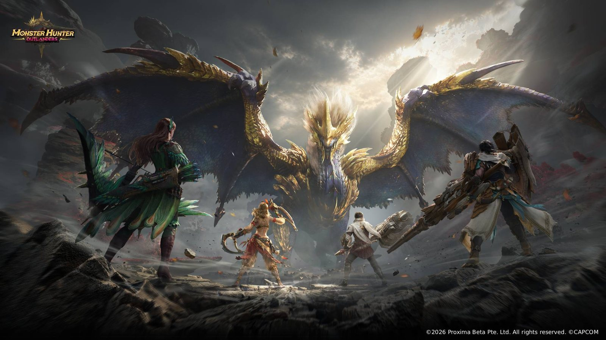

Monster Hunter Outlanders魔物獵人：旅人
Monsters魔物
Officially named large monsters, with Elder Dragons kept apart. Other chapters — adventurers, weapons, Aesoland, and hunting — are separate pages.
官方具名的大型魔物，古龍種分開列出。冒險家、武器、埃索島和狩獵是另外的頁面。
23 officially named monsters官方具名魔物 23 種
10 Nov 2026 · Hong Kong time2026年11月10日 · 香港時間
Unofficial fan guide非官方粉絲手冊

Elder Dragons古龍種
Only the three named as Elder Dragons in the sources reviewed.只有本次查核來源中被稱為古龍種的三種。